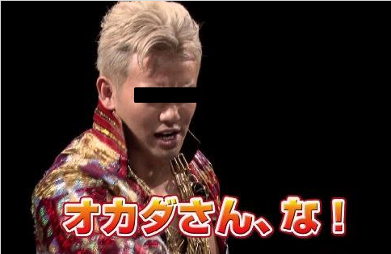
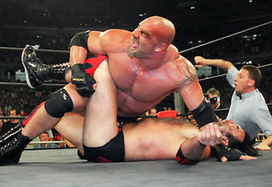
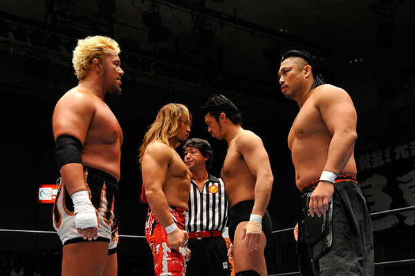
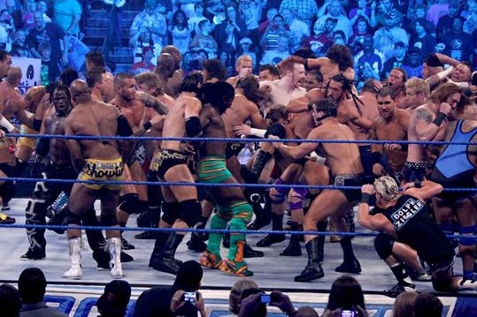
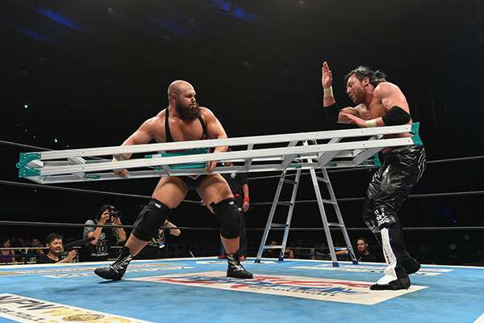
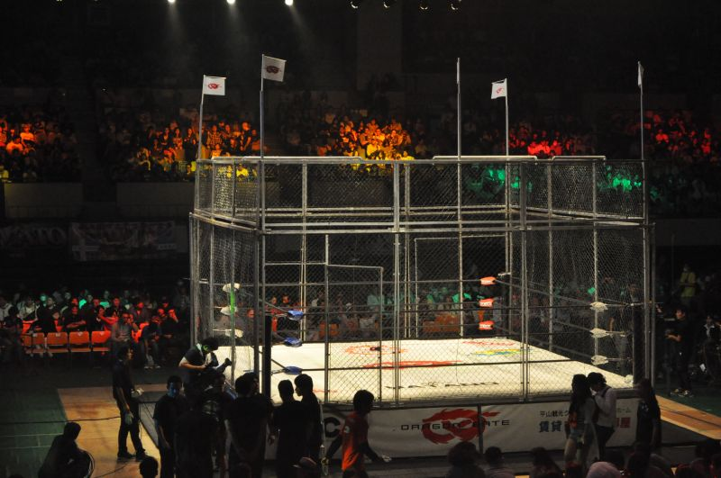
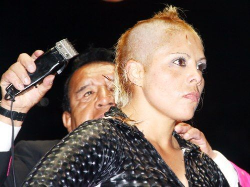
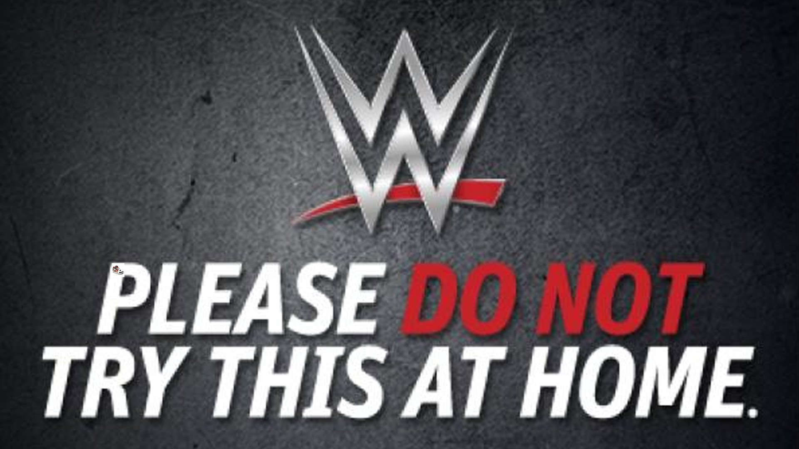

YAMALT vol.02

好きなことについて
ベラベラ語るLTやります
本日のお題
プロレス
ちなみにファン歴は人生の半分(26/2=13年)くらい
世間一般が思う（と僕が思っている）プロレスイメージ
- 野蛮
- こわい
- 痛そう
- 面白さが分からん
- CMで見たことある

プロレスの定義について
興行として行われるレスリング。
ショー的要素が大きい。
（goo国語辞書より出典）
つまりエンターテイメントの１種
肉体を使った演劇や
サーカスみたいな認識でOK
基本的なルール
- ３カウント（相手を抑えこむ）←だいたいこれ
- ギブアップ（関節技）
- KO（１０カウント）、TKO
- 反則裁定（凶器攻撃、レフェリー攻撃など）

試合形式
実は色々な
種類がある
↑ 今日一番伝えたい内容 ↑
基本編
- シングルマッチ（1 vs 1）
- タッグマッチ（2 vs 2）

人が増えると...
- 3WAYマッチ（1 vs 1 vs 1）
- 4WAYマッチ（1 vs 1 vs 1 vs 1）
- 6人タッグマッチ（3 vs 3）
- 4WAYタッグマッチ（2 vs 2 vs 2 vs 2）
- 4WAY6人タッグマッチ（3 vs 3 vs 3 vs 3）
サバイバル方式
ロイヤルランブルマッチ(海外)

合計５０人近くの人間が時間差入場で戦う
モノを使った形式
ラダー・マッチ
ラダー（脚立）を使って吊るされたベルトを取る。
（それ以外の勝敗裁定なし）

金網マッチ
金網から脱出・旗を奪取する形式。残った選手が負け。

ペナルティマッチ
敗者髪切りマッチ
（＝カベジェラ・コントラ・カベジェラ）
（＝カベジェラ・コントラ・カベジェラ）

その他コントラ・マッチ
- マスカラ・コントラ・マスカラ (マスク)
- カーロ・コントラ・カーロ (愛車)
- ノンブレ・コントラ・ノンブレ （リングネーム）
- 逆カベジェラ・コントラ・カベジェラ（髪を伸ばす）
- 貴重品・コントラ・貴重品（パスポート）
- キャバクラ・コントラ・カベジェラ
- 実年齢・コントラ・厚化粧
! 危険な試合形式 !
- アイアンマンマッチ
（60分間フルタイムで戦う） - ラストマン・スタンディング
（最後に立っていた方の勝ち） - ファーストブラッド・マッチ
（先に流血させたほうが勝ち） - ハードコアマッチ・デスマッチ
（凶器攻撃・流血あり）
ハードな内容なので初心者にはおすすめできません
こんな形式もある？！
- ぐるぐるバットデスマッチ
（ぐるぐるバットで十回回らなくてはならない） - 睡眠防止デスマッチ
（リング上に敷かれた布団で３秒寝たら負け） - 目隠し乳隠しデスマッチ
（目隠しをし更にブラジャーを装着した状態で戦う） - しりとり技マッチ
（お互い技を出し合いながらしりとりをする） - 巌流島決戦
（実際に巌流島で行う観客無しの完全自己満マッチ） - etc...
試合形式だけで
色々ある理由
正直ネタ切れ
いろんな形のプロレスがあるから
細分化しつつある団体
新日本プロレス ／ 全日本プロレス ／ みちのくプロレス ／ I.W.A. JAPAN ／ 大日本プロレス ／ DDTプロレスリング ／ 大阪プロレス ／ プロレスリング・ノア ／ KAIENTAI DOJO ／ 暗黒プロレス組織666 ／ DRAGON GATE ／ プロレスリングZERO1 ／ 超花火プロレス ／ フーテン プロモーション ／ 覆面MANIA ／ ガッツワールド ／ DRADITION ／ 頑固プロレス ／ 沖縄プロレス ／ イノキ・ゲノム・フェデレーション ／ FREEDOMS ／ SECRET BASE ／ VKFプロレス ／ 天龍プロジェクト ／ プロフェッショナルレスリング・ワラビー ／ ハナヤシキプロレスリング ／ Five ／ LEGEND THE PRO-WRESTLING ／ スポルティーバ エンターテイメント ／ プロレスリング HEAT-UP ／ WRESTLE-1 ／ 道頓堀プロレス ／ ASUKA PROJECT ／ 九州プロレス ／ シアタープロレス花鳥風月 ／ バトスカフェ ／ 超戦闘プロレスFMW ／ 魔界 ／ 歌舞伎町プロレス ／ JWP女子プロレス ／ LLPW-X ／ OZアカデミー ／ センダイガールズプロレス ／ プロレスリングWAVE ／ OSAKA女子プロレス ／ アイスリボン ／ 崖のふちプロレス ／ スターダム ／ REINA女子プロレス ／ ワールド女子プロレス・ディアナ ／ 我闘雲舞 ／ 東京女子プロレス ／ 世界プロレス協会 ／ Marvelous ／ SEAdLINNNG ／ WWE ／ X-SHOOTO ／ パンクラス ／ リングス＆THE OUTSIDER ／ 掣圏真陰流＆リアルジャパンプロレス ／ U-FILE CAMP＆プロレスリングU-STYLE ／ DEEP ／ ZST ／ UFC ／ シュートボクシング ／ Krush ／ K-1 WORLD GP ／ REBELS ／ BLADE ／ GLORY ／ 巌流島 ／ RIZIN
初心者でも興味を引く内容
ストーリーがあるので分かりやすい
選手の得意、不得意な分野を活かす
プロレスは楽しい
エンターテイメント！
※ もちろん人それぞれの感想はあります

おわりに
プロレスはいいぞ。
昭和あたりは正直曖昧ですが
ノア絶頂期〜現在らへんなら会話できます